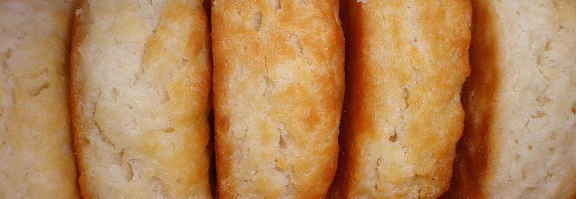

You will need:
- 2 1/2 cups blanched almond flour
- 2 tablespoons of flaxseeds, ground
- 5 tablespoons of water
- 1/2 teaspoon sea salt
- 1/2 teaspoon baking soda
- 1/4 cup coconut oil
- 1 tablespoon honey
Instructions:
- Combine all dry ingredients in a bowl.
- After grinding up the flaxseeds, mix with the 5 tablespoons of water.
- Combine all wet ingredients in a bowl.
- Mix the dry ingredients into the wet.
- Form into biscuits.
- Bake at 350 for 15 minutes.
Adapted from Elana's Pantry